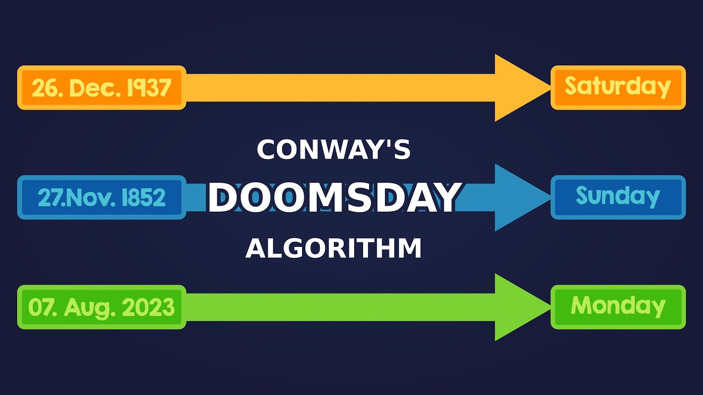
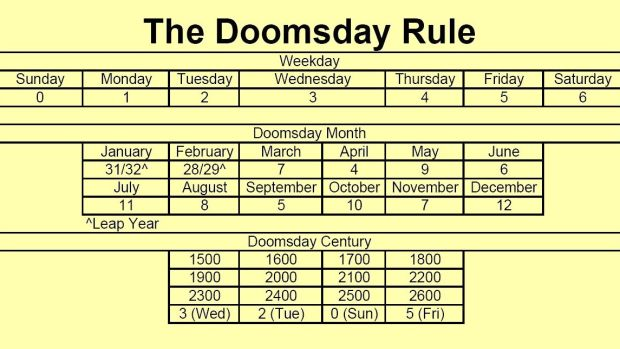

The Doomsday Algorithm, devised by mathematician John Horton Conway, is a fascinating method for determining the day of the week for any given date. It's a nifty tool that combines mathematical precision with a touch of historical curiosity, making it both a practical and intellectually stimulating exercise.

Understanding the Algorithm
The core idea behind the Doomsday Algorithm is that each year has a "Doomsday" — a specific day of the week that certain dates fall on. Once you know the Doomsday for a given year, you can easily calculate the day of the week for any date in that year. The algorithm consists of a few steps:
Anchor Day Calculation:
This is the day of the week for a known Doomsday in a given century. For example, the anchor day for the 1900s is Wednesday, and for the 2000s, it's Tuesday. Yearly Doomsday Calculation: Calculate the Doomsday for the specific year. This involves: Taking the last two digits of the year. Adding the number of times 12 fits into those digits. Adding the quotient obtained by dividing the remainder from the previous step by 4. Summing these results and taking the modulus 7 of the sum. Determine the Closest Doomsday: Find a date in the same year that falls on the Doomsday. Notable Doomsdays include: 4/4, 6/6, 8/8, 10/10, and 12/12. For non-leap years: 1/3, 2/28, 3/14, 5/9, 7/11, 9/5, and 11/7. For leap years: 1/4 and 2/29. Calculate the Target Date: Use the known Doomsday and the difference in days to determine the day of the week for the desired date. Example Calculation Let's determine the day of the week for July 4, 2024. Anchor Day for the 2000s: Tuesday. Yearly Doomsday Calculation: Last two digits of the year: 24. How many times 12 fits into 24: 24 12 = 2 12 24 =2. Remainder: 24 m o d 12 = 0 24mod12=0. How many times 4 fits into 0: 0 4 = 0 4 0 =0. Sum: 24 + 2 + 0 = 26 24+2+0=26. Modulus 7: 26 m o d 7 = 5 26mod7=5. Therefore, the Doomsday for 2024 is 5 days after Tuesday, which is Sunday. Closest Doomsday to July 4: In a leap year like 2024, July 11 is a Doomsday. Calculate the Target Date: July 11, 2024, is a Sunday. July 4 is 7 days before July 11. Since 7 days before Sunday is also Sunday. So, July 4, 2024, is a Sunday.
Applications and Fun Facts
The Doomsday Algorithm isn't just a mathematical curiosity; it has practical applications, such as in calendar design and event planning. It's also a popular party trick for impressing friends with your ability to quickly calculate the day of the week for any date. John Horton Conway, who created the algorithm, was a renowned mathematician known for his work in group theory, number theory, and the creation of the cellular automaton called the Game of Life. His contributions to recreational mathematics have made complex concepts accessible and enjoyable for a broad audience. In summary, the Doomsday Algorithm is a brilliant example of how mathematical patterns can be applied to everyday problems, turning the abstract into the practical and the complex into the manageable. Whether you're a math enthusiast or just curious, it's a fun and useful tool to have in your mental toolbox.